ANILA 使用手冊
給院內同仁 · 平台版本 v1.0.1 · 2026-09-02
1ANILA 是什麼、不是什麼
ANILA 是院內自建的 AI 工作平台。你用自然語言問它問題，它會回答、整理、摘要、翻譯、幫你讀檔案； 問到院內規章時，它會先去查平台上的規章知識庫，再依條文回答，並列出來源。
它跟外面的 ChatGPT 最大的差別有三個：
- 資料不出院。 平台與模型都在院內機房，你貼進去的內容不會傳到院外。
- 用自然人憑證卡登入。 沒有帳號密碼要記，也沒有人能冒用你的身分。
- 答案有依據。 查過規章的答案會附「查看 N 筆來源」，你可以點開核對。
它不是權威。 條號、日期、金額、人名這類東西，一律回到來源或原始文件核對後再用。 產生的內容只能當草稿，最後判斷的是你。
2登入：插卡、輸入 PIN
登入需要三樣東西：自然人憑證卡、讀卡機、電腦上已安裝的中華電信讀卡元件（本機元件，位址 http://localhost:16888）。
內網配發的電腦預設已裝好元件；若畫面顯示「尚未安裝」或「本機元件未運作」，聯絡資訊室，不是你的操作問題。
- 插卡，開啟平台網址。畫面上只有一顆按鈕：偵測憑證卡。
- 按下去，畫面會顯示卡片上的姓名與員工編號。看一眼是不是你。
- 輸入 6 位數 PIN 碼，按 Enter 或「簽章送出」。

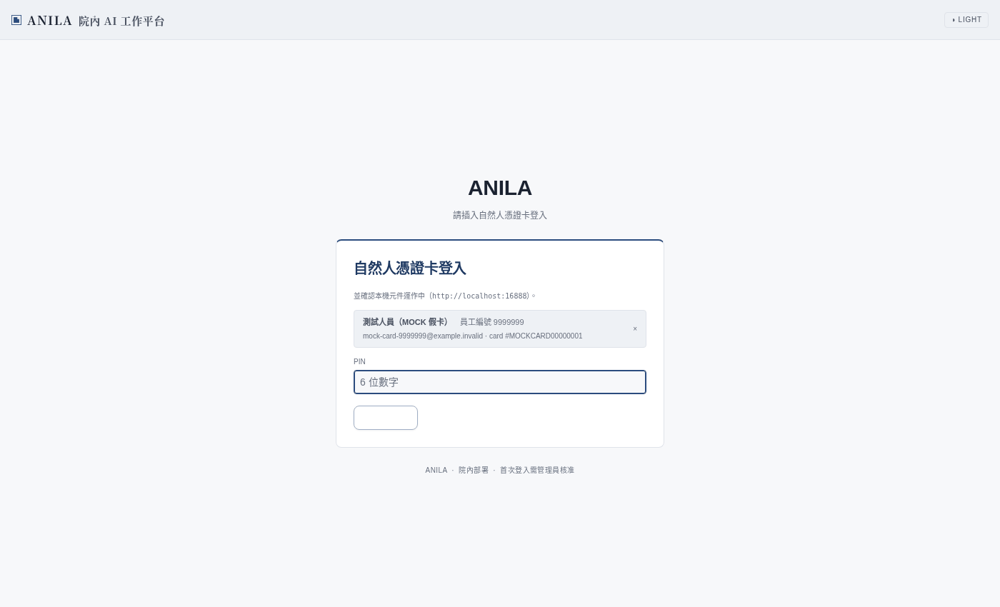
PIN 連續輸錯會鎖卡，鎖卡要重新申請憑證，很麻煩。不確定時先停下來，不要一直試。
卡片請隨手拔。 卡片留在讀卡機上等於帳號留在登入狀態，別人坐下就能以你的身分使用，而所有使用紀錄都會記在你名下。
3第一次登入：註冊、等核准
第一次刷卡，平台會跳出「註冊 · 完成資料」，只要你做一件事：選你所屬的單位，按送出。
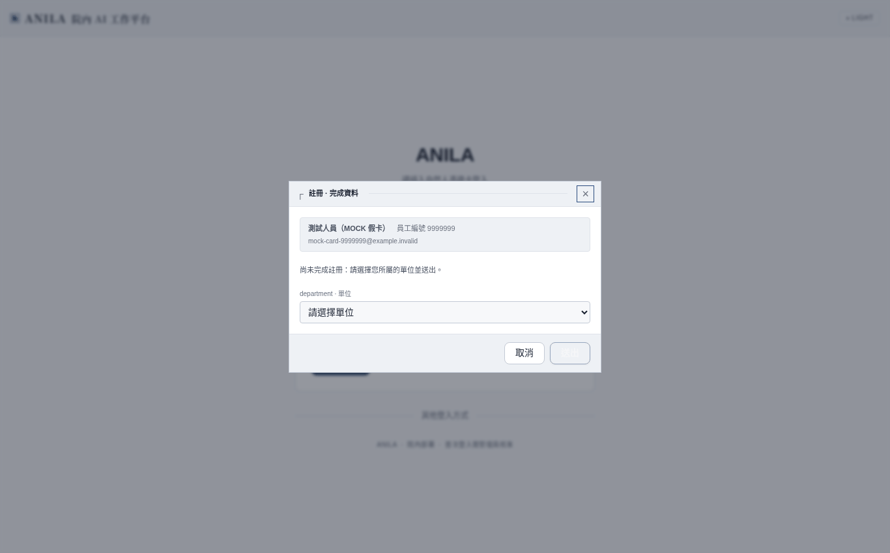
送出後會看到「已註冊 · 等待核准」。這時不用再做任何事：管理員核准後，你直接再刷一次卡就能進來。等候期間要查進度，找貴單位窗口或平台管理員。
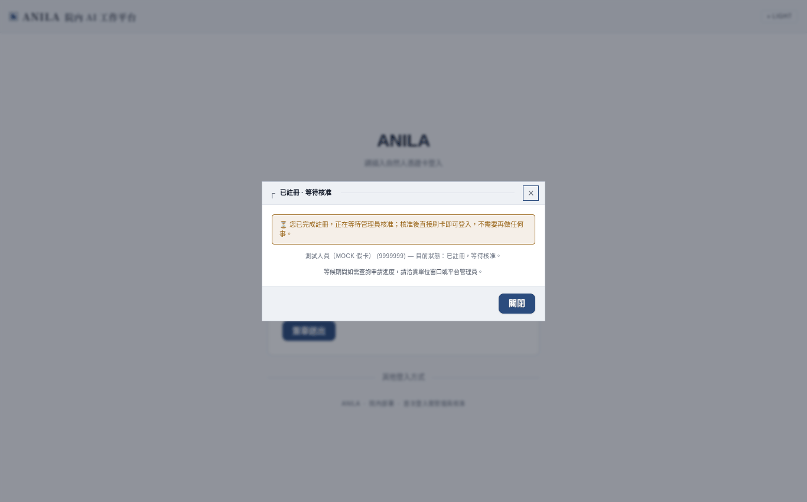
下拉選單裡沒有任何單位可選？那是平台還沒把單位建好，不是你的問題。請管理員先建單位（管理員手冊第 3 節）。
4畫面導覽
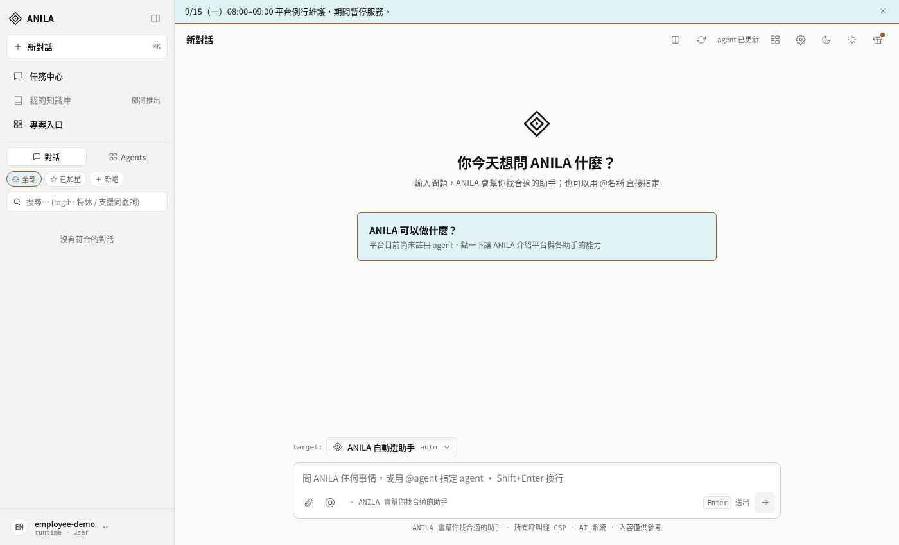
| 位置 | 是什麼 |
|---|---|
| 左上「新對話」 | 開一個新主題。不同主題請開不同對話，答案會比較準。快捷鍵 ⌘K／Ctrl K。 |
| 左側「任務中心／專案入口」 | 任務中心：助手在背景幫你跑的長時間工作會列在這裡；目前沒有任務時，按了畫面不會有變化。專案入口：院內其他系統的連結（第 15 節）。 |
| 左側「對話／Agents」 | 對話：你的對話清單，可搜尋、加星、分資料夾。Agents：平台上可用的助手清單。 |
| 中間輸入框 | 打字、Enter 送出、Shift+Enter 換行。左下迴紋針是附檔，@ 是指定助手。 |
| 輸入框上方「target」 | 這個問題要交給哪個助手。預設「ANILA 自動選助手」，平台自己判斷。 |
| 右上工具列 | 更多（交給其他助手）、分享、比較模式、重新載入助手清單、專案入口、設定、深淺色、外觀微調、新功能。把滑鼠停在圖示上會顯示名稱；有些圖示要開了對話才會出現。 |
| 左下你的名字 | 目前登入的身分與角色。點開可以登出。 |
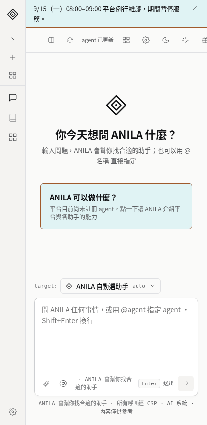
5問第一個問題
在下方輸入框打字、按 Enter。就這樣。
問得好的三個習慣：
- 一個對話一個主題。 平台會參考同一個對話裡前面的內容；主題混在一起，答案就會混在一起。
- 用規章裡的詞。 問「差勤」會比問「上班打卡」查得到東西；問「第 46 條」不要加空格。
- 說清楚你要什麼形式。 「列成表格」「三點以內」「用公文語氣」都有用。
6送出後畫面在做什麼
按下 Enter 之後，答案上方會逐步列出平台正在做的事：分析你的問題、檢索院內規章、同步助手清單、組合回答……做完的打勾，進行中的那一步會閃。
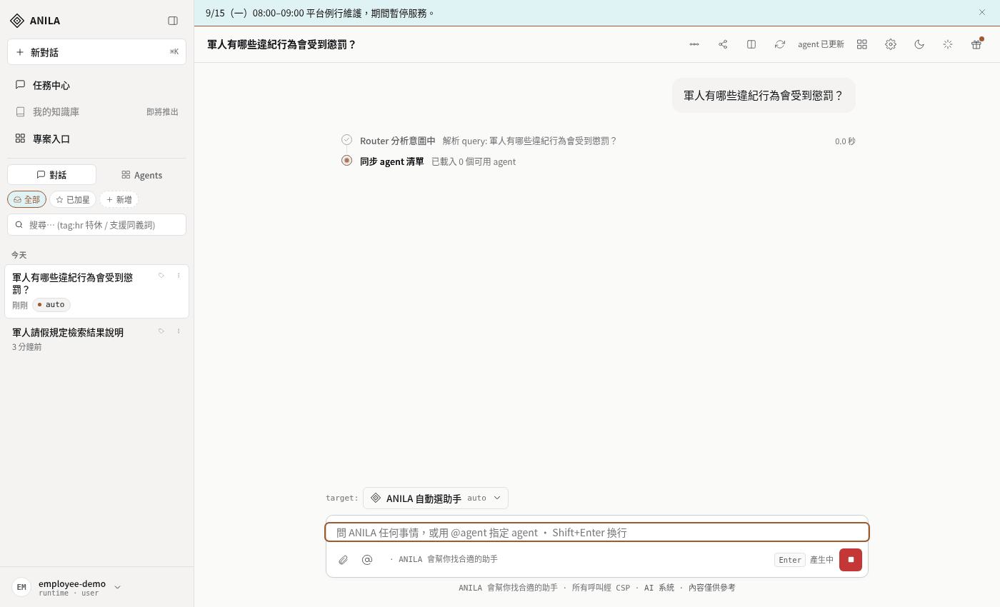
答完之後，這些步驟會收成一行「N 步分析 · 用時 X 秒」。點那一行可以展開再看一次。
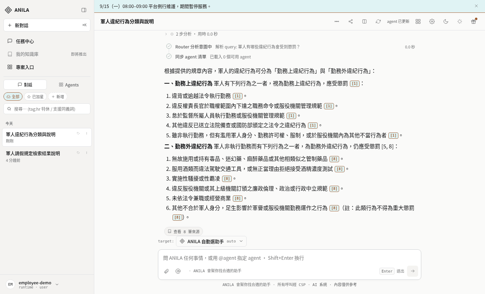
答案太長想中途停下來：輸入框右邊的送出鍵在回答期間會變成停止，按它就停。
7院內規章：什麼時候平台會去查
平台有一個院內規章知識庫。當你的問題像是在問規章，它會先去查，再根據查到的條文回答，並在答案下方放一顆「查看 N 筆來源」。答案裡的 [1]、[8] 就是對應第幾筆來源。
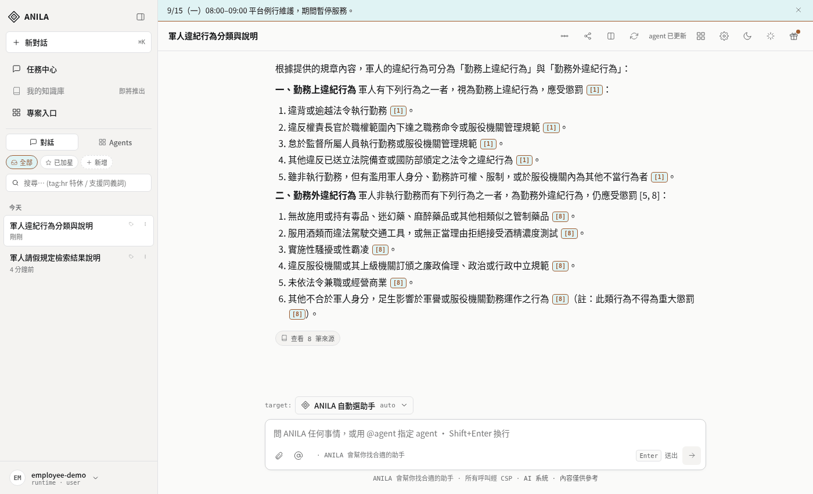
點「查看 N 筆來源」，右側會打開來源側欄：每一筆列出檔名、相似度、條文摘錄。要當依據的時候，請回到這裡核對。
如果平台沒有查，它會講
不是每個問題都會觸發規章檢索。當平台沒有去查的時候，答案上方會出現一句：
本次未檢索院內規章，以下為模型的一般知識
看到這句話，就表示這個答案沒有院內規章當依據，是 AI 依照它自己的訓練知識回答的。問題如果跟院內規定有關，請不要直接採用。
這句話只描述「平台做了什麼」，不代表院規裡沒有這條規定——可能只是這次沒有查，或是那份規章還沒有上架。
查了但沒找到
平台查了、但沒有找到夠相關的條文時，也會明講（例如「目前提供的院內規章檢索結果中，並沒有關於○○的資訊」）。這種時候換個問法常常有用：把口語換成規章裡會出現的詞（「請假」換成「差勤」、「被罰」換成「懲罰」）。
8答案下方的按鈕
把滑鼠移到答案上，下方會出現一排小按鈕。
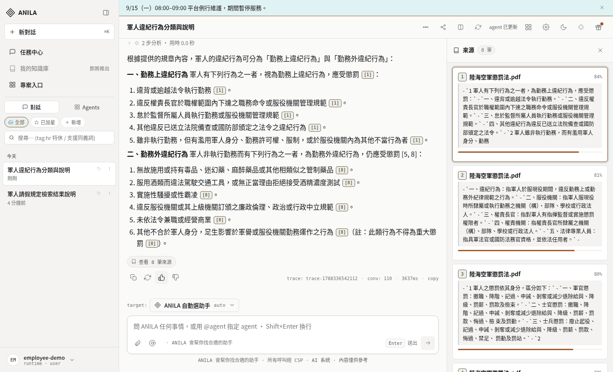
| 按鈕 | 做什麼 |
|---|---|
| 複製 | 把整段答案複製到剪貼簿（純文字）。 |
| 重新產生 | 同一個問題再回答一次。新舊兩版都會留著，可以左右切換比較（第 9 節）。 |
| 拇指向上／向下 | 告訴平台這個答案好或不好。按下之後會展開一小塊：1–5 分、原因（資訊不正確／未遵循指示／引用錯誤／離題／其他）、選填的補充說明，按「送出」。這些回饋管理員看得到，是平台改善的主要依據。 |
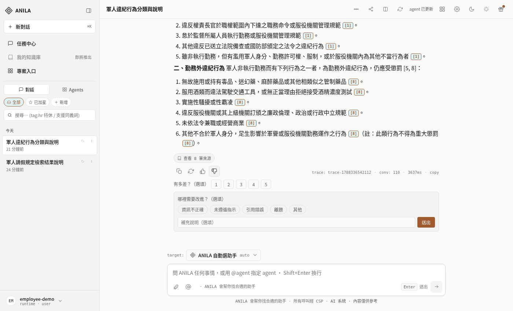
9改問題、重問、換答案
把滑鼠移到你自己的訊息上，會出現「編輯」。改完重送，原本那版會保留，訊息旁邊出現「2 / 2」這種計數，用左右箭頭切換不同版本比較。
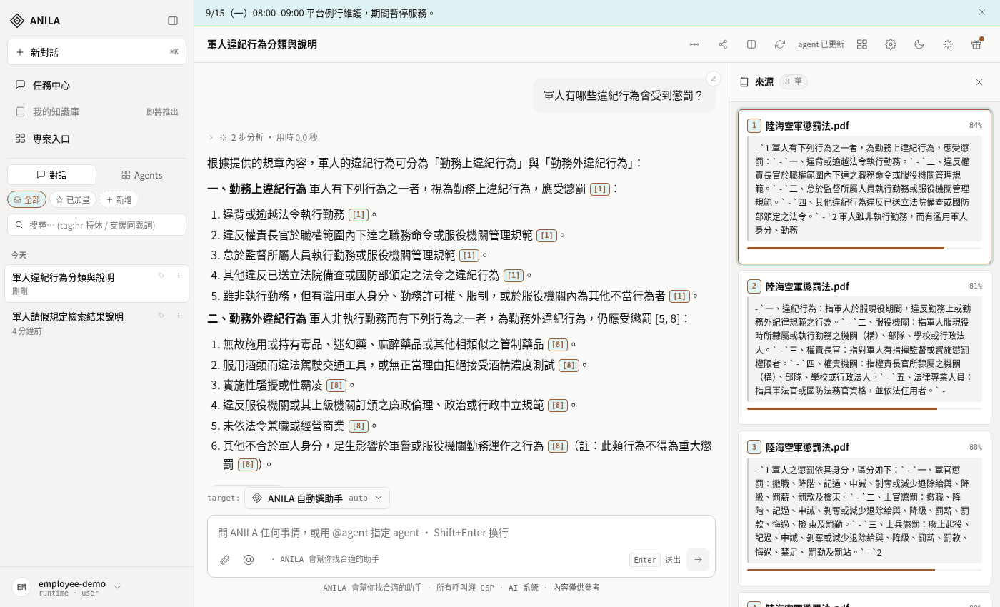
| 你想做的事 | 怎麼做 |
|---|---|
| 換行不送出 | Shift+Enter |
| 重問一次（答案不理想） | 答案下方的「重新產生」 |
| 改自己剛才的問題 | 你的訊息上點「編輯」，改完重送 |
| 看上一版答案 | 訊息旁的「1 / 2」左右箭頭 |
| 刪掉某一版 | 該版本旁的垃圾桶（只刪那一個分支） |
| 中途停止 | 輸入框右側的停止鍵 |
10上傳檔案
輸入框左下角的迴紋針可以附檔：圖片、PDF、文字檔、程式碼；把檔案直接拖進輸入框也可以。附上後直接問「幫我摘要」「第三段在講什麼」。
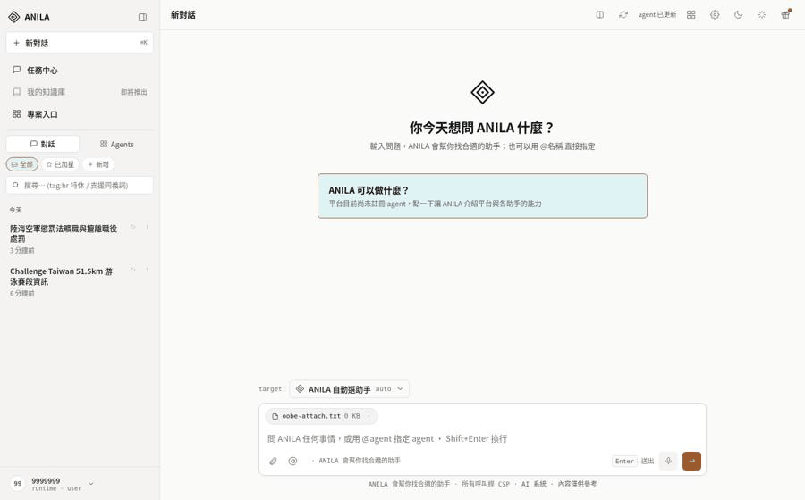
掃描檔（圖片轉成的 PDF）裡面沒有文字，只有圖。平台會盡量辨識，但不一定完整；如果問不出你確定寫在裡面的內容，多半是這個原因。
檔名取得好不好，比檔案內容重要。 簽呈.pdf、掃描檔.pdf 這種名字，過三個月連你自己都找不到。請用看得出是什麼的名字，例如 差勤管理辦法-1140301修正.pdf。
「我的知識庫」（左側）目前標示「即將推出」：個人長期知識庫還沒開放，現階段檔案是附在單一對話裡使用。院內規章那種全院共用的知識庫由管理員上架。
11指定助手、交給其他助手
平台上除了一般對話，還有同仁掛上來的專門助手（agent），例如專門查某類法規的。不確定哪個助手適合時，直接問就好：平台會自己判斷要不要轉給專門的助手。
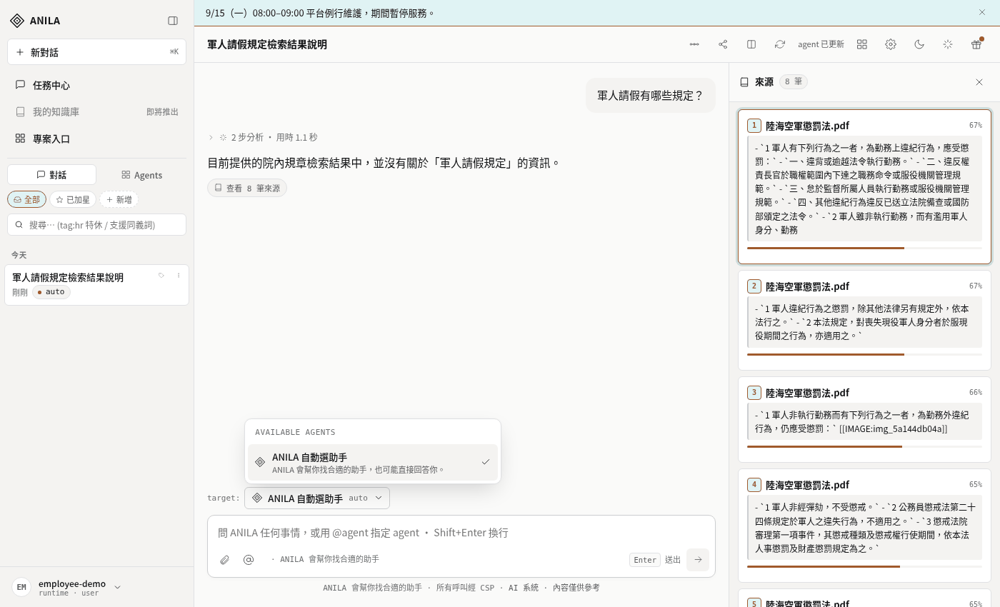
| 功能 | 怎麼做 |
|---|---|
| 指定某個助手回答 | 「target」選單選它；或在輸入框打 @ 加助手名稱。 |
| 把目前的問題轉給另一個助手 | 右上工具列「更多」→「交給其他助手」。 |
| 比較兩個助手的答案 | 右上工具列的「比較模式」，同一個問題同時問兩個助手，左右並排看。要有兩個以上助手可用才會亮。 |
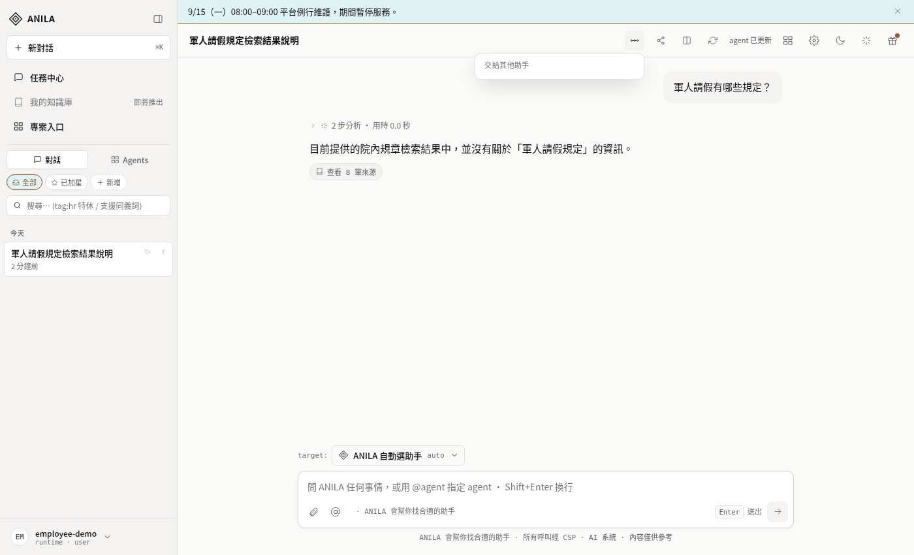
你的長期記憶（第 14 節）不會送給任何助手。這是平台強制的，不是靠助手的作者自律。
12管理你的對話
左側清單依時間分「今天／更早」。每一筆右邊有兩個小圖示：標籤／資料夾與更多。
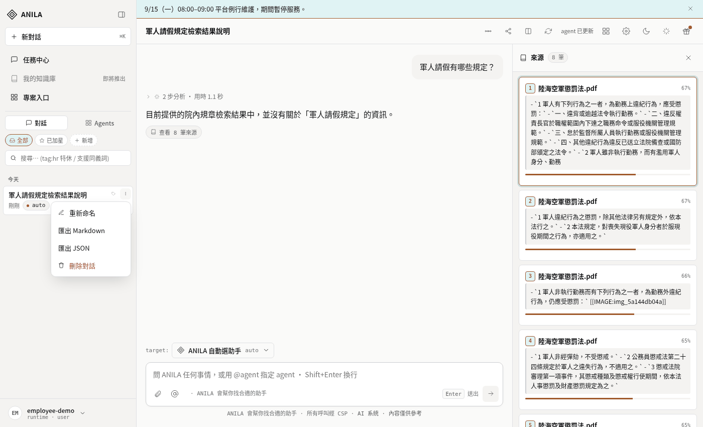
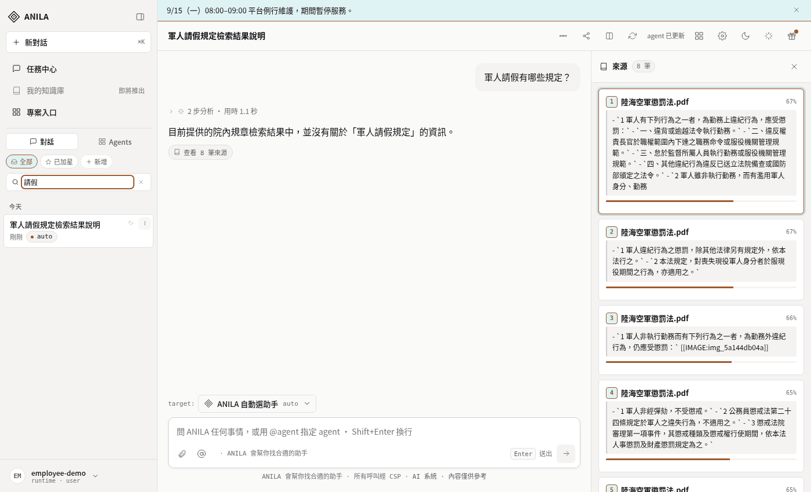
tag:hr 這種寫法搜某個標籤，也認同義詞（打「特休」也找得到「休假」）。- 已加星：把常用的對話加星，清單上方「已加星」只看這些。
- 資料夾：「新增」建資料夾，再用每筆對話旁的「標籤／資料夾」圖示把它歸進去。
- 刪除是真的刪，平台不會替你留備份。要留紀錄先匯出。
13分享對話
右上工具列的「分享」可以把這個對話給同仁看，或整個交給同仁接手。
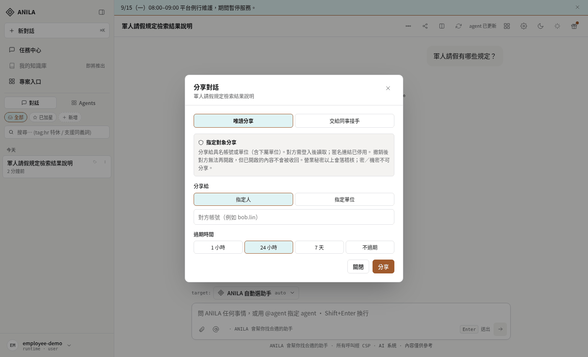
| 選項 | 意思 |
|---|---|
| 唯讀分享 | 對方可以看，不能改。你隨時可以撤銷；撤銷後對方無法再開，但已經看過的內容收不回來。 |
| 交給同事接手 | 對方接手後可以繼續問；適合交接。 |
| 指定人／指定單位 | 填對方帳號，或選一個單位（含下屬單位）。對方要登入才看得到，沒有匿名連結。 |
| 過期時間 | 1 小時、24 小時、7 天或不過期。預設 24 小時。 |
分享會留稽核紀錄。營業秘密以上的對話分享會被記錄；密／機密等級的對話不能分享，按鈕會是灰的。對話的等級由平台依助手的預設分類決定，你自己改不了。
14平台記得你什麼
為了讓對話更順，平台會記住一些關於你的長期資訊（例如你的單位、你偏好的回答方式），在後續對話裡自動帶入。
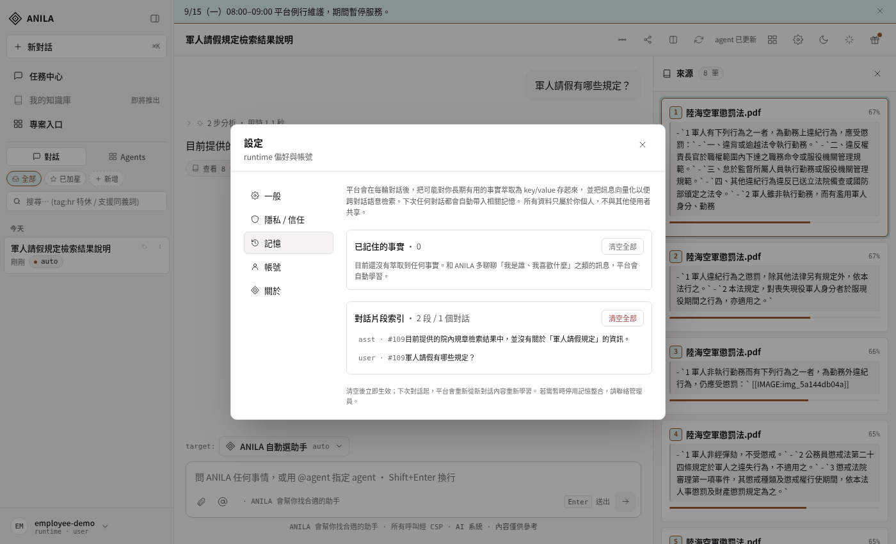
- 你可以自己看、自己刪。 清空後立即生效。
- 記憶不會離開平台。 使用同仁自行掛上來的助手時，平台不會把你的記憶送給它。
- 所有資料只屬於你個人，不與其他使用者共享。
15專案入口
工具列或左側的「專案入口」會列出院內其他可用的系統。這裡只是入口，點了會開新分頁；各系統有自己的權限，看不到的表示沒有開放給你。
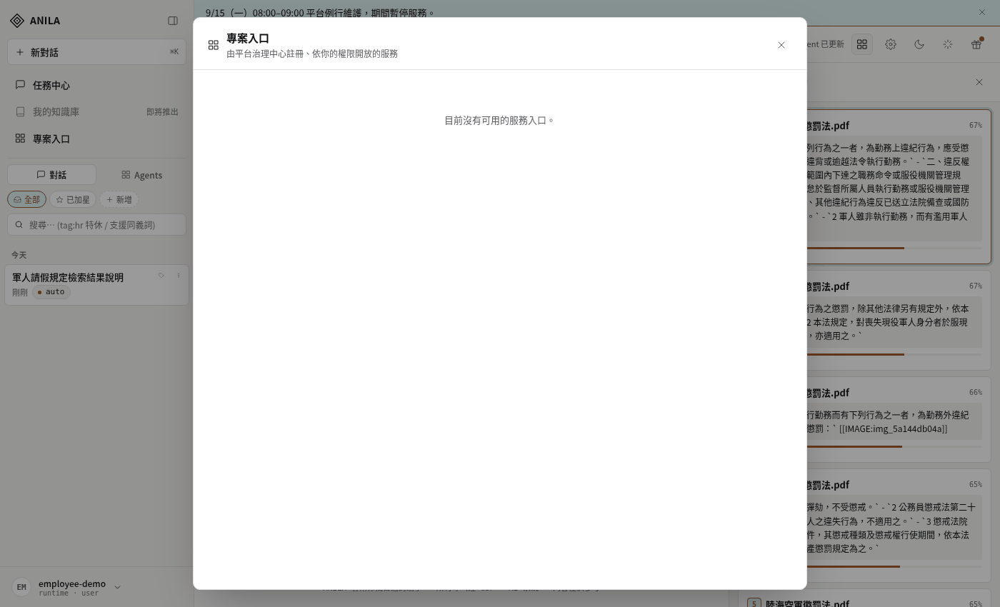
16設定
右上齒輪。設定分成五頁，大部分人只會用到「記憶」與「帳號」。
| 頁 | 裡面有什麼 |
|---|---|
| 一般 | 預設助手是誰、列管等級怎麼決定。只是說明，沒有可以改的東西。 |
| 隱私／信任 | 「敏感資訊處理」：送出前若偵測到像身分證、電話、金鑰的字樣，要提醒（warn）還是擋下（block）。預設提醒。這是你自己的偏好，換電腦登入也會保留。 |
| 記憶 | 第 14 節。 |
| 帳號 | 你的帳號、角色。確認自己的身分用。 |
| 關於 | 平台版本。回報問題時附上。 |
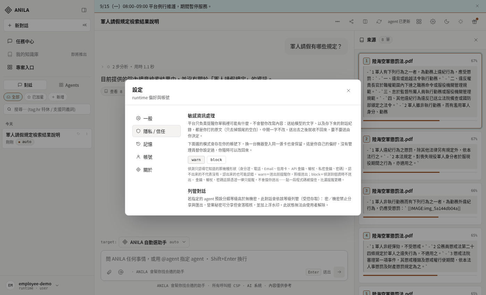
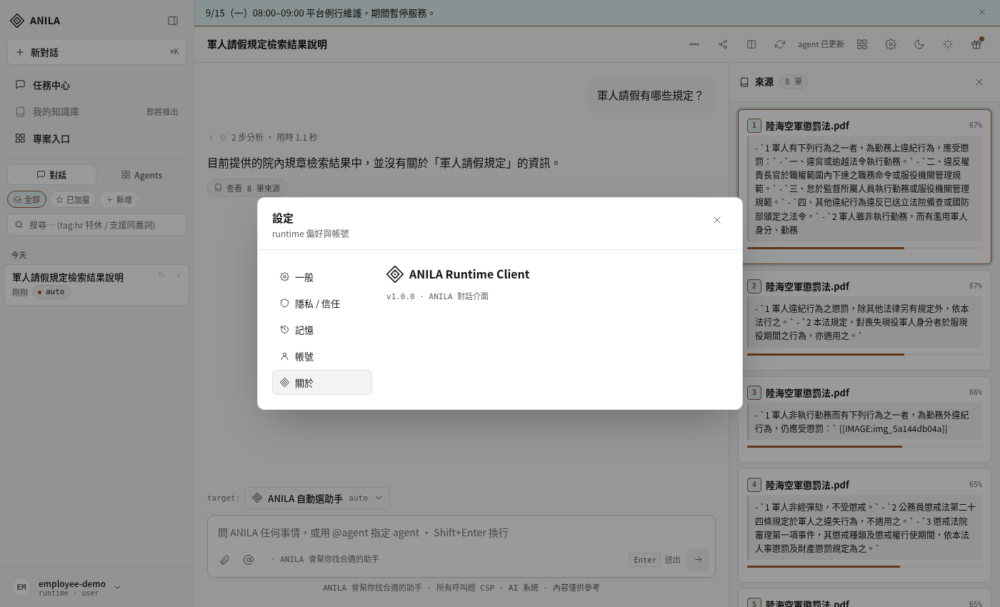
17公告
管理員發布的公告會出現在畫面最上方（第 4 節的圖有一條）。右邊的 × 關掉這一條，下一則新公告會再出現。重要公告也會顯示在登入頁。
18遇到狀況怎麼辦
| 狀況 | 可能原因與處理 |
|---|---|
| 答案答非所問 | 先試「重新產生」。問題裡有條號、日期這類關鍵數字的，換個寫法再問一次（例如「第46條」不加空格）。 |
| 查不到我確定有的規章 | ① 換成規章裡的正式用詞；② 確認那份規章已經上架（問管理員）；③ 看答案上方有沒有「本次未檢索院內規章」。 |
| 上傳的檔案問不出內容 | 多半是掃描檔（第 10 節）。 |
| 答案說「僅提供○○服務，無法回答」 | 那是某個專門助手的拒答，不是平台壞了。把「target」改回「ANILA 自動選助手」再問一次。 |
| 畫面卡住或空白 | 重新整理頁面（Ctrl+Shift+R）。對話內容都存在伺服器，不會因為重整而消失。平台剛更新版本時尤其會這樣。 |
| 登入失敗 | 確認卡片插好、PIN 沒鎖。畫面顯示「尚未安裝中華電信本機元件」是讀卡元件沒裝或沒起，聯絡資訊室。 |
| 刷卡後說「等待核准」 | 你的帳號還沒被核准，或已被停用。找貴單位窗口或平台管理員。 |
| 看到「暫時維護中」 | 那個系統目前關閉，不是故障。等公告。 |
回報問題時請附上三樣：你問了什麼、你預期什麼、畫面上出現什麼。再加上答案下方灰字的追蹤編號（trace-…）更好。只說「壞掉了」很難查——同一個畫面在不同人身上可能完全不同。
19平台不會做的事
- 不會連到外面的網際網路。 它查不到今天的新聞、匯率、外部網站。
- 不會替你做決定。 產生的內容一律要由你判斷後才使用。
- 不保證正確。 尤其是條號、金額、日期、人名，請核對來源。
- 不會把你的資料送出院外。
請不要把你自己也不確定能不能給 AI 看的東西貼進來。平台在院內、資料不外流，但「誰能看到什麼」仍然依照你原本的權限與密等規定。不確定的時候，先問你的主管或業務單位。